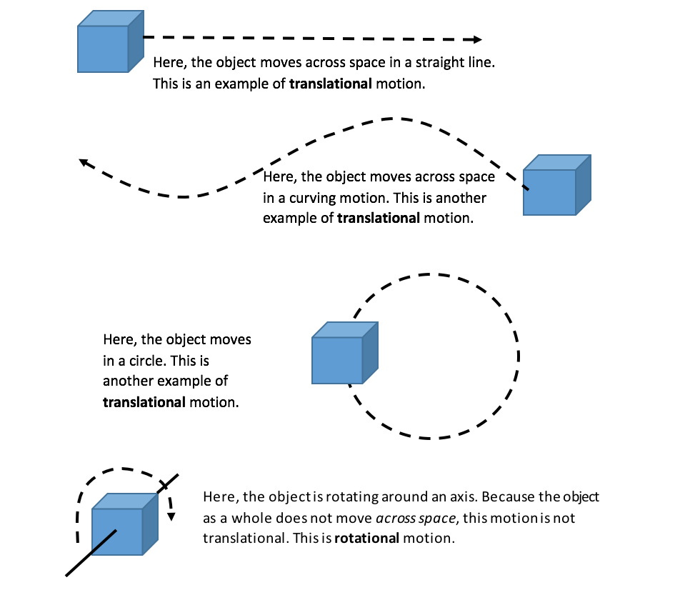

Kinetic and Potential Energy
What is Energy? Energy in general is a measure of the motion of objects.
There are two general categories of energy that objects may have: Kinetic energy and Potential energy.
- Kinetic energy is the energy of an object due to its motion. The faster an object is moving, the more kinetic energy it has. For example, an electron that is moving faster has more kinetic energy than a slower-moving electron.
- Potential energy is the amount of motion an object can have (in the future) because it is being acted on by some force. For example, electrons are pulled by protons toward the nucleus of atoms. Because of this, electrons have the "potential" to move even faster.
- Kinetic energy is the energy of an object (including atoms and molecules!) that is due to the object’s motion. Because there are different types of motion, there are different types of kinetic energy. When people use the term "kinetic energy," they are most likely referring to the translational kinetic energy of an object. The translational kinetic energy of an object is the kinetic energy of the object due to the object as a whole moving across some distance .
- The (translational) Kinetic energy of an object is equal to the product of its mass and the square of its speed (or velocity): KE = ½m*v2
- In these units, if we say "kinetic energy," we mean "translational kinetic energy." If we mean another type of kinetic energy, we will say what that other kind of kinetic energy is (e.g., "rotational kinetic energy").
- Below are some types of translational motion (and one other type of motion):

A final type of non-translational kinetic energy is vibrational motion. For this type of kinetic energy, again the object as a whole does not move through space. Instead, it moves kind of like an accordion. A person playing an accordion can stand still while playing it because it has no translational motion.
An example of vibrational motion is shown below.

In the example above, the "object" is composed of two boxes and a spring between them. The boxes both move away from each other, then back toward each other (like the accordion). But the middle of the spring (the "center of mass") does not move in space.
Carbon dioxide is one molecule that absorbs energy from sunlight, which is converted into vibrational motion of the molecules.

((Advanced: Due to new (probably unfamiliar) terminology))
- Kinetic energy (KE)due to rolling: An object can have other types of kinetic energy as well as translational KE. One other type of kinetic energy is the energy due to the object spinning around an axis (including rolling on the ground). This is called rotational KE.
.png)
- In general, rotationalKE = ½I • ω2. (This looks similar to KE = ½m • v2, right?) I is like the mass of the object, but it’s the resistance of the object’s mass to rotational motion (rather than translational motion). And ω is the rotational speed of the object or how fast the object rotates on its axis (rather than translational speed).
- If a solid ball is rolling across a surface, it will have BOTH translational KE and rotational KE. Again, the rotational KE is in general equal to: ½ I • ω2.
- For a solid sphere, I = (2/5)m • r2 (you need to look up values of I for different shapes of objects)
- This relationship indicates that I, the resistance to spinning, increases with both the mass (m) of the sphere and with the square of the radius of the sphere. (So, smaller spheres resist spinning less than larger spheres, which is intuitive, right?)
- ω is related to the translational speed of the sphere (if it is rolling without slipping on the surface at all) as follows: ω = v/r.
- This is because when an object rolls one revolution, or 360 degrees--which is equal to 2 π radians (trust us for now)--it will travel a distance equal to the circumference of the sphere, 2 πr (where r is the radius of the sphere) or πd(where d is the diameter of the sphere).
- So, KER = (2/5) m • r2 × (v/r)2 → the r’s will cancel out, so we get for the rotational KE of a sphere: KER = 2/5 m • v2
((End of advanced section))
Potential energy is the potential for an object to move because the object "feels" a force (such as gravity, an electric force, a magnetic force, etc.). An object such as a rock at the top of a cliff has potential energy because gravity can make it fall (and gain a lot of kinetic energy, if it's high enough!).
- The potential energy of an object due to gravity depends on three variables:
- the mass of the object (m)
- the acceleration due to gravity (g) (on Earth, g is about 10 m/s2),
- and its height above the ground (h).
- As each of these variables increases, the potential energy of the object increases. This is shown in the equation below:
- The potential energy of an object (due to gravity) = m x g x h
- The relationship between potential and kinetic energy is discussed in more detail in the unit: Energy Can Change Forms But Must Be Conserved .